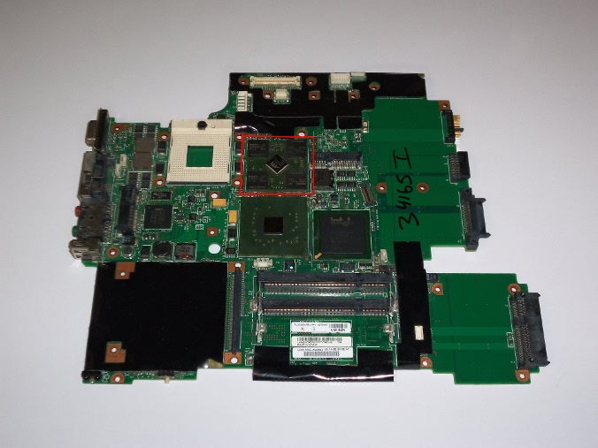
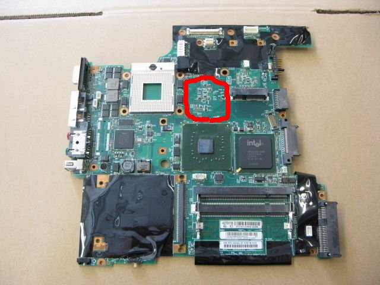

If you downloaded libreboot_meta.tar.gz, then you can use the scripts included which download all of the extra dependencies and (basically) generates libreboot_src.
You need to install the build dependencies first.
The following scripts installs them for apt-get distros.
Adapt what's in this script if you don't use an apt-get distro:
$ sudo ./builddeb
After that, run the get script:
$ ./getall
What this did was download everything (grub, coreboot, memtest86+, bucts, flashrom) at the versions last tested for this release, and patch them. Read the script in a text editor to learn more.
After that, you will have the full source. Rename libreboot_meta to libreboot_src. To build the ROM's, see #build.
This is for Lenovo BIOS users on the ThinkPad X60 and T60. If you have coreboot or libreboot running already, ignore this.
Bucts is needed when flashing the X60/T60 ROM while Lenovo BIOS is running. Each ROM contains identical data inside the two final 64K region in the file. This corresponds to the final two 64K regions in the flash chip. Lenovo BIOS will prevent you from writing the final one, so running "bucts 1" will set the machine to boot from the other block instead (which is writeable along with everything beneath it when using a patched flashrom. see #build_flashrom). After shutting down and booting up after the first flash, the final 64K block is writeable so you flash the ROM again with an unpatched flashrom and run "bucts 0" to make the machine boot from the normal (highest) block again.
BUC.TS utility is included in libreboot_src.tar.gz and libreboot_bin.tar.gz.
If you downloaded libreboot_meta.tar.gz, follow #build_meta before you proceed.
"BUC" means "Backup Control" (it's a register) and "TS" means "Top Swap" (it's a status bit). Hence "bucts" (BUC.TS). TS 1 and TS 0 corresponds to bucts 1 and bucts 0.
You need to install GCC. The following will work on apt-get distros (adapt that script if your distro doesn't use apt-get):
$ sudo ./builddeb-bucts
To build bucts, do that in the main directory:
$ ./builddeps-bucts
The "builddeps" script in libreboot_src and libreboot_meta also makes use of builddeps-bucts.
Flashrom is the utility for flashing/dumping ROM's. This is what you will use to install libreboot.
Flashrom source code is included in libreboot_src.tar.gz and libreboot_bin.tar.gz.
If you downloaded libreboot_meta.tar.gz, follow #build_meta before you proceed.
You need the build dependencies for flashrom.
The following script works in apt-get distros (tested in Trisquel 6):
$ sudo ./builddeb-flashrom
To build it, do that in the main directory:
$ ./builddeps-flashrom
After you've done that, under ./flashrom/ you will find the following executables:
The "builddeps" script in libreboot_src and libreboot_meta also makes use of builddeps-flashrom.
Before building a ROM in libreboot (or coreboot, for that matter), you need to configure it.
This is done using the following inside the source tree:
$ make menuconfig
If you've already built a kernel before, you know how to use this interface.
Configurations are saved then as files called ".config". Copies of each configuration used for each machine type by the libreboot build scripts are stored in resources/libreboot/config/
There is certain information that can be useful to enter in particular:
This information can be obtained using:
$ sudo dmidecode
# dmidecode
Specifically, it's good practise to enter the same information for libreboot that you found when running this with the original BIOS or firmware. libreboot has already done this for you. This information is for reference, in the hope that it will be useful.
Now go back into Devices:
The resulting .config file was saved as resources/libreboot/config/x60config and is used by the build scripts for this machine.
This is based on an X60S with the Core 2 Duo L7400 processor.
SMBIOS Version Number is ThinkPad X60 on the X60, but it is believed that X60 and X60s both have identical motherboards where the only difference is the CPU. This same configuration is used on the X60 and X60s.
Now go back into Devices:
The resulting .config file was saved as resources/libreboot/config/x60config and is used by the build scripts for this machine.
This is based on an X60T with the Core 2 Duo L7400 processor.
The resulting .config file was saved as resources/libreboot/config/t60config and is used by the build scripts for this machine.
It is believed that the motherboards on 14.1" and 15.1" T60's are the same, so the same configuration is used on both the 14.1" and 15.1" T60's.
Go back and disable option ROM's:
The resulting .config file was saved as resources/libreboot/config/macbook21config and is used by the build scripts for this machine.
If you have anything special in a directory called libreboot_bin, just outside of libreboot_src, then back it up first.
You don't need to do much: there are scripts already written for you that can build everything automatically.
Install all dependencies (works on apt-get distros, tested in Trisquel 6)
$ sudo ./builddeb
If your distro uses a different package manager or package names, then you'll need to adapt what you see in 'builddeb' and install it yourself - maybe you could share the script for your distro!
Also, make sure that you have the sha512sum utility installed.
If running for the first time, run this:
$ ./buildall (also performs the "./build" step below)
Or if you only want to build dependencies (crossgcc, grub and so on):
$ ./builddeps
If you've already run ./builddeps and/or ./buildall before, you don't need to run them again.
Just run that from now on to build your ROM's:
$ ./build
To un-build (clean) the build dependencies that you built before, do that:
$ ./cleandeps
Note: after running 'cleandeps', you will need to run 'builddeps' or 'buildall' again before you can use 'build'.
After 'build' or 'buildall' has finished, an ../libreboot_bin directory will exist outside of libreboot_src containing the ROM's and other files. In libreboot_src will also be a directory called 'bin' which contains all of the ROM's that you compiled.
The script also generates a 'libreboot_meta' directory outside of libreboot_src, which contains everything in src except for grub, coreboot, memtest, flashrom and bucts. There is a script called 'getall' from src included in meta, which downloads and patches everything needed to create src.
Reading all of those scripts will teach you how everything is built. It should also be simple to modify it to your needs.
T60 15.4" (1280x800 and 1680x1050) with Intel GPU is untested in this release. Not much yet is known about panel names. They will be tested at a later date.
To find what LCD panel you have, see: #get_edid_panelname.
When upgrading the XGA (1024x768) LCD panel to SXGA+ (1400x1050) on the 14.1" T60, you also need to use this inverter board:
When upgrading the XGA (1024x768) LCD panel to SXGA+ (1400x1050), UXGA (1600x1200) or QXGA (2048x1536) on the 15.1" T60, you also need to use one of these inverter boards:
See #supported_t60_list for a list of LCD panels on ThinkPad T60 14.1" and ThinkPad T60 15.1".
The Video BIOS (VBIOS) for T60 has been reverse engineered and replaced with Free Software. However, at the time of preparing this release the free replacement did not yet support the XGA (1024x768) panels, which is what made upgrading them necessary.
The 'Video BIOS' is what initializes graphics.
See: https://en.wikipedia.org/wiki/Video_BIOS.
If your T60 is a 14.1" or 15.1" model with an ATI GPU, it won't work with libreboot by default but you can replace the motherboard with another T60 motherboard that has an Intel GPU, and then libreboot should work.
As far as I know, 14.1" (Intel GPU) and 15.1" (Intel GPU) T60 motherboards are the same, where 'spacers' are used on the 15.1" T60. In any case, it makes sense to find one that is guaranteed to fit in your chassis.
Note: the T60p is a 15.4" widescreen laptop and uses completely different shaped motherboards (all of which have ATI). The T60p laptops cannot be used with libreboot under any circumstances.
The following T60 motherboard shows an ATI GPU (do not buy this) (highlighted in red, or on the right next to the white CPU socket), which is unsupported by libreboot:

The following T60 motherboard shows an Intel GPU (buy this!) (highlighted in red or on the right next to the white CPU socket, you can see that the space for ATI GPU is empty):

The reason that the ATI GPU on T60 is unsupported is due to the VBIOS (Video BIOS) which is non-free. The VBIOS for the Intel GPU on X60/T60 has been reverse engineered, and replaced with Free Software and so will work in libreboot.
The 'Video BIOS' is what initializes graphics.
See: https://en.wikipedia.org/wiki/Video_BIOS.
In fact, lack of free VBIOS in general is a big problem in coreboot, and is one reason (among others) why many ports for coreboot are
unsuitable for libreboot's purpose.
Theoretically, the ThinkPad T60 with ATI GPU can work with libreboot and have ROM's compiled for it, however in practise it would not be usable as a laptop because there would be no visual display at all. That being said, such a configuration is acceptable for use in a 'headless' server setup (with serial and/or ssh console as the display).
There is an Apple laptop called the macbook2,1 from late 2006 or early 2007 that uses the same i945 chipset as the ThinkPad X60 and ThinkPad T60. A developer ported coreboot to his macbook2,1, and now libreboot can run on it.
Mono Moosbart is the person who wrote the port for macbook2,1. Referenced below are copies (up to date at the time of writing, 20140630) of the pages he wrote when porting coreboot to the macbook2,1. They are included here in case the main site goes down for whatever reason, since they include a lot of useful information.
Backups created using wget:
$ wget -m -p -E -k -K -np http://macbook.donderklumpen.de/
$ wget -m -p -E -k -K -np http://macbook.donderklumpen.de/coreboot/
Use -e robots=off if using this trick for other sites and the site restricts using robots.txt
Links to wget backups (and the backups themselves) of Mono's pages (see above) removed temporarily. Mono has given me permission to distribute them, but I need to ask him to tell me what license these works fall under first. Otherwise, the above URL's should be fine. NOTE TO SELF: REMOVE THIS WHEN DONE
It is believed that all models are compatible, listed here:
Specifically (Order No. / Model No. / CPU):
Also of interest: #config_macbook21.
Recommended ROM's to flash:
This will give you your native keyboard layout in GRUB. The preferences in your OS are not affected, it just makes using the GRUB command line easier (if you ever need to do that). #grub_keyboardshows you how this was done. If your native keyboard layout differs, you can adapt those notes and hack the 'build' script for your needs.
For pictures of what these keyboard layouts look like (so you can compare with yours), see #keyboards.
Hover over the next paragraph to make it black.
Following this guide means simply flashing a libreboot ROM. This guide will not (directly) teach you how to make a backup (dump) of the original Lenovo BIOS
because to do so would be to explicitly endorse proprietary software. However, for the purposes of reverse engineering it can be useful
to have a backup. Each copy of the original Lenovo BIOS is tied to the specific machine that it came from; it will not run
on any other machine, even if it's the same type of machine as yours. What this means is that, effectively, you can back it up now (so that you can
re-flash it later if you want to run the original Lenovo BIOS again) or lose it forever. The X60/T60 installation
guide on the coreboot wiki will show you how to do this:
http://www.coreboot.org/Board:lenovo/x60/Installation.
Do not make this decision lightly! This is your last and only chance.
(the above message is a lot more benign and a lot less scary than it looks)
This is for the ThinkPad X60 and T60 while running Lenovo BIOS. If you already have coreboot or libreboot running, then go to #flashrom instead!
If you are flashing a Lenovo ThinkPad T60, be sure to read #supported_t60_list
If you are using Trisquel 6 (32-bit) then the bucts/flashrom binaries are tested. If not (or if you want), recompile them:
See: #build_flashrom
See: #build_bucts
In any case, you will want the dependencies to run them aswell:
$ sudo ./builddeb-flashrom
$ sudo ./builddeb-bucts
(^ works on Trisquel 6, maybe other apt-get distros. Adapt for all other distros.)
"YOURBOARD/YOURROM" should be replaced with what is correct as per #rom. Alternatively you may be using your own custom ROM. Adapt.
Run the script:
$ sudo ./lenovobios_firstflash bin/YOURBOARD/YOURROM.
You should see within the output the following:
"Updated BUC.TS=1 - 64kb address ranges at 0xFFFE0000 and 0xFFFF0000 are swapped".
You should also see within the output the following:
"Flash chip is in an unknown state", "FAILED" and "DO NOT SHUTDOWN OR REBOOT"
Seeing this means that the operation was a resounding success! DON'T PANIC.
See this link for more details: http://thread.gmane.org/gmane.linux.bios.flashrom/575.
If the above is what you see, then SHUT DOWN. Wait a few seconds, and then boot; libreboot is running, but there is a 2nd procedure needed (see below).
When you have booted up again:
$ sudo ./lenovobios_secondflash bin/YOURBOARD/YOURROM
You should see within the output the following:
"Updated BUC.TS=0 - 128kb address range 0xFFFE0000-0xFFFFFFFF is untranslated"
You should also see within the output the following:
"Verifying flash... VERIFIED."
Shut down again, wait a few seconds, and then boot.
!!!!
These instructions work for both the ThinkPad X60 and T60.
This assumes that you already have coreboot or libreboot running
If you have Lenovo BIOS running, go to #flashrom_lenovobios instead.
If you are flashing a Lenovo ThinkPad T60, be sure to read #supported_t60_list
If you need to recompile flashrom:
See: #build_flashrom
You also need the run-time dependencies. This script works on apt-get distros:
$ sudo ./builddeb-flashrom
Look at #rom to see which ROM is suitable for your machine. Alternative you may be using your own custom ROM. Adapt.
Flash the ROM:
$ sudo ./flash bin/YOURBOARD/YOURROM
You should see "Verifying flash... VERIFIED." written at the end of the flashrom output. SHUT DOWN after you see this, and then boot up again after a few seconds.
You don't need to do this unless you would like to change the default font yourself. (this is just for reference. It has already been done for you)
The old font used was Unifont, and this had some missing characters: for instance, the border showed ??? characters instead of lines.
I tried DeJavu Sans Mono from this website: dejavu-fonts.org
Specifically, the version that I chose was the latest at the time of writing (Saturday 21 June 2014): this one
This is a free font that is also contained in GNU/Linux distributions like Trisquel or Parabola.
$ cd libreboot_src/grub
compile grub ('build' script has the info on how to do this)
come back out into libreboot_src/resources/grub:
$ cd ../libreboot_src/resources/grub/font
I took Dejavu Sans Mono from dejavu (included in this version of libreboot) and did:
$ ../../../grub/grub-mkfont -o dejavusansmono.pf2 ../../../dejavu-fonts-ttf-2.34/ttf/DejaVuSansMono.ttf
I then added the instructions to 'build' script to include resources/grub/dejavusansmono.pf2 in all of the ROM's in root of cbfs.
I then added that instructions to the grub.cfg files (to load the font):
loadfont (cbfsdisk)/dejavusansmono.pf2
Taken from WikiPedia. See https://en.wikipedia.org/wiki/Dvorak_Simplified_Keyboard and https://en.wikipedia.org/wiki/QWERTY.
You can adapt the notes below and update the 'build' script to make it build a ROM with your custom/other keyboard layout in GRUB.
$ cd libreboot_src/grub
compile grub ('build' script has the info on how to do this)
come back out into libreboot_src
$ cd ../
Generate the layout file:
$ ckbcomp us > usqwerty
$ cat usqwerty | ./grub/grub-mklayout -o usqwerty.gkb
Note: these files are already included ('build' script also makes use of them). You don't need to do any of this.
$ ckbcomp gb > ukqwerty
$ cat ukqwerty | ./grub/grub-mklayout -o ukqwerty.gkb
Note: these files are already included ('build' script makes use of them). You don't need to do it.
How the dvorak.gkb was made (for US Dvorak layout in GRUB).
$ cd libreboot_src/grub
compile grub ('build' script has the info on how to do this)
come back out into libreboot_src:
$ cd ../
Generate the layout file:
$ ckbcomp dvorak > usdvorak
$ cat usdvorak | ./grub/grub-mklayout -o dvorak.gkb
Note: these files are already included ('build' script makes use of them). You don't need to do it.
There isn't much difference.
$ cp usdvorak ukdvorak
Patch ukdvorak like so (diff usdvorak ukdvorak):
diff the usdvorak file with ukdvorak to see how it was patched.
Now create ukdvorak.gkb
$ cat ukdvorak | ./grub/grub-mklayout -o ukdvorak.gkb
Note: these files are already included ('build' script makes use of them). You don't need to do any of this.
Sometimes, on some setups, when turning up the brightness while at max, it will loop back to minimum. Also, the minimum will turn the backlight off completely.
Install build dependencies (for Trisquel 6. Adapt if your distro is different):
$ sudo apt-get install build-essential
Go into the libreboot_src directory. Under coreboot/util/nvramtool/ do that to compile it: $ make
Now do that:
$ sudo ./nvramtool -w tft_brightness=0xff
Alternatively if there are errors, try:
$ sudo ./nvramtool -y ../../src/mainboard/lenovo/x60/cmos.layout -w tft_brightness=0xff
The next time you boot, the looping issue should be gone.
Install build dependencies in Trisquel 6 (adapt for other distro):
$ sudo apt-get install build-essential
nvramtool is in coreboot or libreboot source tree until util/:
$ cd libreboot_src/coreboot/util/nvramtool
$ make
Enable wifi:
$ sudo ./nvramtool -w wlan=Enable
Disable wifi:
$ sudo ./nvramtool -w wlan=Disable
If that doesn't work, try one of these instead:
$ sudo ./nvramtool -y ../../src/mainboard/lenovo/x60/cmos.layout -w wlan=Enable
$ sudo ./nvramtool -y ../../src/mainboard/lenovo/x60/cmos.layout -w wlan=Disable
The next time you boot, wifi will be enabled.
Install build dependencies in Trisquel 6 (adapt for other distro):
$ sudo apt-get install build-essential
nvramtool is in coreboot or libreboot source tree until util/:
$ cd libreboot_src/coreboot/util/nvramtool
$ make
Enable wifi:
$ sudo ./nvramtool -w trackpoint=Enable
Disable wifi:
$ sudo ./nvramtool -w trackpoint=Disable
If that doesn't work, try one of these instead:
$ sudo ./nvramtool -y ../../src/mainboard/lenovo/x60/cmos.layout -w trackpoint=Enable
$ sudo ./nvramtool -y ../../src/mainboard/lenovo/x60/cmos.layout -w trackpoint=Disable
The next time you boot, trackpoint will be enabled.
Now you can use this command to kill that noise:
$ sudo powertop --auto-tune
You can also run it without parameters and then go into 'Tunables' and set everything to 'Good'
Note: On Trisquel 6, you will need to use a later powertop version from git. The one in the repositories is too old. See below:
Included with libreboot is a script called 'powertop.trisquel6'. Run this and it will setup powertop to run with --auto-tune at boot time. Load the file in your text editor to see how it does that.
$ ./powertop.trisquel6
This has been tested on Trisquel 6.
The following removes most of the noise. It reduces what is a high frequency whine (that not everyone can hear) to a slight buzz (which most people can't hear or doesn't bother most people).
This is not perfect! The full solution is still not discovered but this is a step towards that. Also, in some instances you will need to run 'sudo powertop --auto-tune' again. This needs to be implemented properly in coreboot itself!
On the X60 with coreboot or libreboot, there is a high pitched sound when idle. So far we have use processor.max_cstate=2 or idle=halt in GRUB. These consume power. Stop using them!
Be root
$ su -
Installed powertop:
# pacman -S powertop
and added the following to /etc/systemd/system/powertop.service :
[Unit] Description=Powertop tunings [Service] Type=oneshot RemainAfterExit=no ExecStart=/usr/bin/powertop --auto-tune # "powertop --auto-tune" still needs a terminal for some reason. Possibly a bug? Environment="TERM=xterm" [Install] WantedBy=multi-user.target
Finally, as root do that:
# systemctl enable powertop
# systemctl start powertop
The next time you boot the machine, the buzz will be gone.
For the Thinkpad X60 you can use the "UltraBase X6" dock. For the ThinkPad T60, you can use the "Advanced Mini Dock".
If you are using one of the ROM's with 'serial' in the name, then you have serial port enabled in libreboot and you have memtest86+ included inside the ROM. Connect your null modem cable to the serial port on the dock and connect the other end to a 2nd machine using your USB Serial adapter.
On the 2nd machine, you can try this (using GNU Screen):
$ sudo screen /dev/ttyUSB0 115200
How to quit GNU Screen: Ctrl+A then release and press K, and then press Y.
There are also others like Minicom but I like GNU Screen
By doing this before booting the X60/T60, you will see console output from libreboot. You will also see GRUB displaying on the serial output, and you will be able to see MemTest86+ on the serial output aswell. You can also configure your distro so that a terminal (TTY) is accessible from the serial console.
The following guide is for Ubuntu, and can be followed for Trisquel 6.0 which is based on Ubuntu 12.04
(should also work in Trisquel 7, based on Ubuntu 14.04) to enable a serial console using GeTTY:
https://help.ubuntu.com/community/SerialConsoleHowto
Note: part of the tutorial above requires changing your grub.cfg. Just change the linux line to add instructions for enabling getty. See howtos/grub_cbfs.html.
Get the panel name with sudo get-edit | strings
Or look in /sys/class/drm/card0-LVDS-1/edid
If neither of these options work (or they are unavailable), physically removing the LCD panel is an option. Usually, there will be information printed on the back.
Unlisted note: http://inertiawar.com/microcode/ (link published to coreboot mailing list on July 8, 2014)
Copyright © 2014 Francis Rowe, All Rights Reserved.
See license.html for license conditions.
{kind=link}
{kind=link}
{kind=link}
{kind=link}